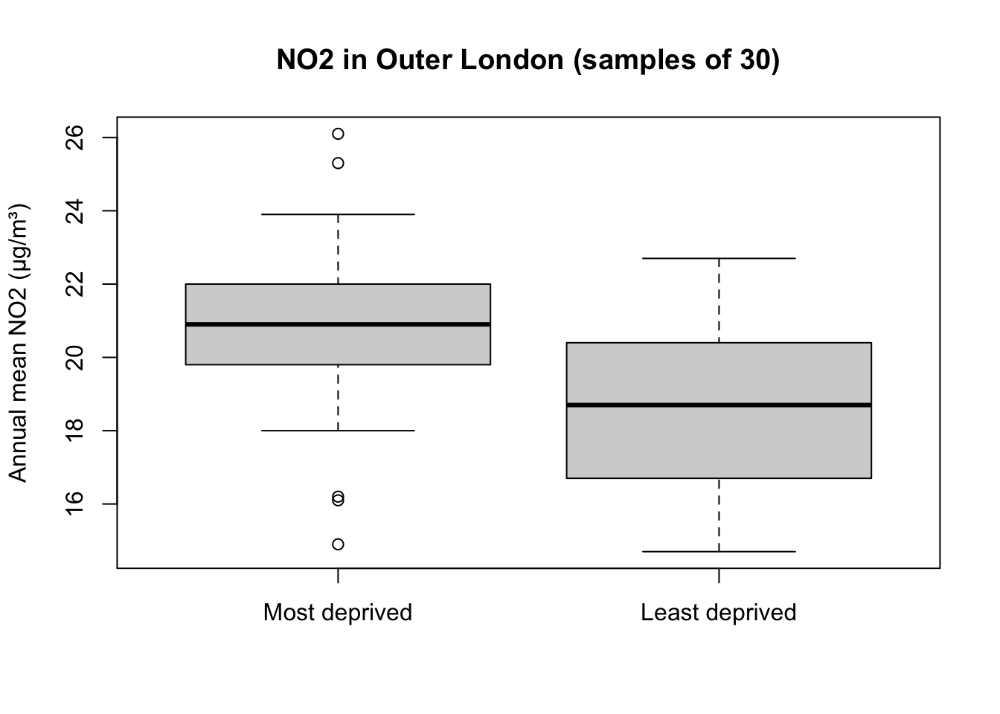
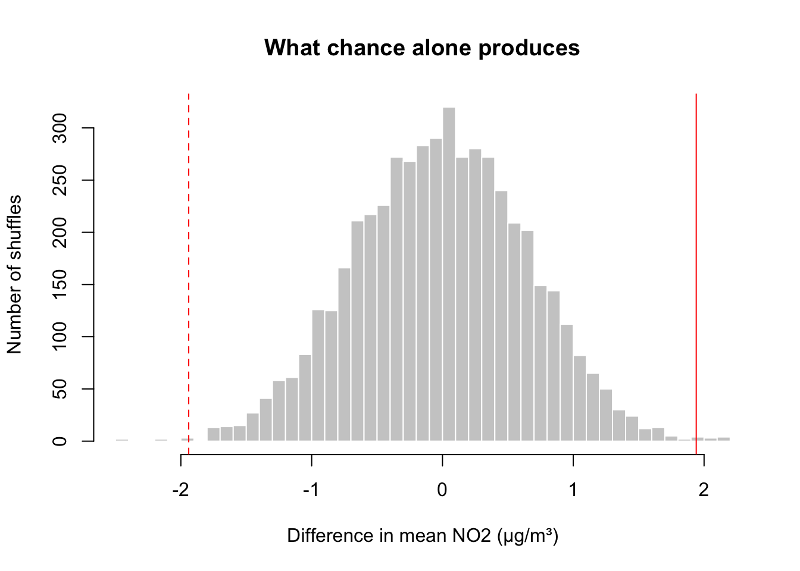

Two sessions ago you saw that more deprived LSOAs tend to have higher NO2. Last week you saw that a sample never matches the population exactly. Put the two together and you get this week’s question: if I see a difference between two groups in my sample, is it a real difference, or could it just be sampling variability? That is what a hypothesis test answers. You ran a t-test in Term 1; this week you find out what it actually does, what its result does and does not mean, and how to report it. This session feeds the second statistics worksheet, and you can start your analysis in class.
ImportantBefore the session
Open your GEOG0187-stats project. Create a new script, w07-testing.R. Have a look back at Confidence intervals from last week.
7.1 The question
We ask: in Outer London, are LSOAs in the most income-deprived fifth exposed to more NO2 than LSOAs in the least deprived fifth?
As last week, we pretend we can only measure a sample: 30 LSOAs from each group. And, as last week, we can check our answer against the full data at the end.
R code
# load the tidyverse and the datalibrary(tidyverse)lsoa <-read_csv('data/london-lsoa-air-quality.csv')# income deprivation quintiles across London, as in Session 5lsoa <- lsoa |>mutate(income_quintile =ntile(income_score, 5))# Outer London, least (1) and most (5) deprived fifths onlyouter <- lsoa |>filter(inner_outer =='Outer', income_quintile %in%c(1, 5)) |>mutate(group =if_else(income_quintile ==5, 'Most deprived', 'Least deprived'),group =factor(group, levels =c('Most deprived', 'Least deprived')))# a random sample of 30 LSOAs from each groupset.seed(48)my_sample <- outer |>group_by(group) |>slice_sample(n =30) |>ungroup()
factor() with levels fixes the order of the groups. R then always compares Most deprived minus Least deprived, so a positive difference means more NO2 in the most deprived LSOAs.
7.2 Describe first
Never test what you have not looked at.
R code
# group summariesmy_sample |>group_by(group) |>summarise(n =n(),mean =mean(no2),sd =sd(no2))
# A tibble: 2 × 4
group n mean sd
<fct> <int> <dbl> <dbl>
1 Most deprived 30 20.8 2.51
2 Least deprived 30 18.8 2.21
# the observed difference in meansobs_diff <-mean(my_sample$no2[my_sample$group =='Most deprived']) -mean(my_sample$no2[my_sample$group =='Least deprived'])obs_diff
[1] 1.94
R code
boxplot(no2 ~ group, data = my_sample,main ='NO2 in Outer London (samples of 30)',xlab ='', ylab ='Annual mean NO2 (µg/m³)')

Figure 1: NO2 in samples of 30 Outer London LSOAs from the most and least income-deprived fifths.
The most deprived LSOAs in our sample have higher NO2. But the two boxes overlap a lot, and last week showed that sample means move around. Could a difference this large appear by chance, even if the two groups were the same in the population?
7.3 Hypotheses
A test starts from a null hypothesis (H0): the boring explanation, which we try to find evidence against.
H0: in the population, mean NO2 is the same in both groups. Any difference in the sample is sampling variability.
H1 (alternative): in the population, mean NO2 differs between the groups.
We then ask: if H0 were true, how surprising would our data be?
7.4 A permutation test
If H0 is true, the labels Most deprived and Least deprived do not matter: any LSOA could just as well have had the other label. So we can shuffle the labels at random, recompute the difference, and do that thousands of times. This shows us which differences we would expect from chance alone.
R code
# shuffle the group labels 5,000 times; each time, compute the differenceset.seed(48)perm_diffs <-replicate(5000, { shuffled <-sample(my_sample$group)mean(my_sample$no2[shuffled =='Most deprived']) -mean(my_sample$no2[shuffled =='Least deprived'])})
R code
hist(perm_diffs, breaks =40,xlim =range(perm_diffs, obs_diff, -obs_diff),main ='What chance alone produces',xlab ='Difference in mean NO2 (µg/m³)', ylab ='Number of shuffles',col ='grey80', border ='white')abline(v =c(obs_diff, -obs_diff), col ='red', lty =c(1, 2))

Figure 2: Differences in means after shuffling the group labels 5,000 times. The solid red line is the observed difference; the dashed line is the same difference in the other direction.
The p-value is the share of shuffles that give a difference at least as large as the one we observed, in either direction:
R code
# p-value: how often is chance at least as extreme as our data?mean(abs(perm_diffs) >=abs(obs_diff))
[1] 0.0032
Very few shuffles produce a difference as large as ours. Data like ours would be very unlikely if H0 were true, so we reject H0: the data provide evidence of a difference. By convention, a p-value below 0.05 is called statistically significant. There is nothing special about 0.05, though, and it is better to report the p-value itself.
7.5 Welch’s t-test
The t-test does the same job with a formula instead of shuffling. It divides the observed difference by its standard error, which you met last week:
\[
t = \frac{\bar{x}_1 - \bar{x}_2}{SE}, \qquad SE = \sqrt{\frac{s_1^2}{n_1} + \frac{s_2^2}{n_2}}
\]
The larger \(t\), the further the difference is from zero in units of standard error, and the smaller the p-value. R’s default, Welch’s t-test, does not assume that both groups have the same spread, so it is the safe choice.
R code
# Welch two-sample t-test: NO2 by groupt_result <-t.test(no2 ~ group, data = my_sample)t_result
Welch Two Sample t-test
data: no2 by group
t = 3.1756, df = 57.104, p-value = 0.002411
alternative hypothesis: true difference in means between group Most deprived and group Least deprived is not equal to 0
95 percent confidence interval:
0.716744 3.163256
sample estimates:
mean in group Most deprived mean in group Least deprived
20.75 18.81
Read the output from the top:
t and df: the test statistic and its degrees of freedom (with Welch’s test these need not be whole numbers);
p-value: close to the permutation test’s, as it should be;
95 percent confidence interval: the confidence interval for the difference in means;
sample estimates: the two group means.
The t-test assumes the sample means are roughly normally distributed. Thanks to the central limit theorem (last week), that holds for moderate sample sizes like ours unless the data are very skewed or have extreme outliers. The permutation test does not need this assumption, which is why it is a good check. In GEOG0018 you will meet the Mann-Whitney U test, another alternative.
7.6 Effect size: how big is the difference?
A p-value tells you whether a difference is distinguishable from chance. It does not tell you whether it is large. Always report the effect size too. The most useful one is the difference itself, in the original units, with its confidence interval:
R code
# difference in means (Most minus Least deprived) and its 95% CIunname(t_result$estimate[1] - t_result$estimate[2])
Is a difference of about 2 µg/m³ large? Compare it with something meaningful: the WHO guideline is 10 µg/m³, and last session the gap between Inner and Outer London was about 4 µg/m³.
When variables have no natural unit, people use a standardised effect size such as Cohen’s d: the difference divided by the (pooled) standard deviation.
R code
# Cohen's d: difference in standard deviation unitssds <- my_sample |>group_by(group) |>summarise(sd =sd(no2))pooled_sd <-sqrt(mean(sds$sd^2))obs_diff / pooled_sd
[1] 0.8199486
As a rough guide, d of 0.2 is small, 0.5 medium and 0.8 large. These labels come from psychology; judge the size in context where you can.
7.7 Check against the truth
Because we have every LSOA, we can see what the population difference really is:
R code
# the true difference in Outer Londontrue_diff <-mean(outer$no2[outer$group =='Most deprived']) -mean(outer$no2[outer$group =='Least deprived'])true_diff
[1] 1.978809
Does the confidence interval from our sample contain it? In real research you can never do this check, which is exactly why the interval matters.
7.8 Common misconceptions
Hypothesis tests are easy to run and easy to misread. Four common mistakes:
7.8.1 “The p-value is the probability that H0 is true”
No. The p-value is calculated assuming H0 is true: it is the probability of data at least as extreme as yours if there were no difference. A p-value of 0.01 does not mean a 1% chance that there is no difference.
7.8.2 “Not significant means no difference”
Repeat the test for Inner London:
R code
# the same comparison, in Inner Londoninner <- lsoa |>filter(inner_outer =='Inner', income_quintile %in%c(1, 5)) |>mutate(group =if_else(income_quintile ==5, 'Most deprived', 'Least deprived'),group =factor(group, levels =c('Most deprived', 'Least deprived')))set.seed(48)inner_sample <- inner |>group_by(group) |>slice_sample(n =30) |>ungroup()t.test(no2 ~ group, data = inner_sample)
Welch Two Sample t-test
data: no2 by group
t = -0.75453, df = 57.99, p-value = 0.4536
alternative hypothesis: true difference in means between group Most deprived and group Least deprived is not equal to 0
95 percent confidence interval:
-1.9725801 0.8925801
sample estimates:
mean in group Most deprived mean in group Least deprived
24.33667 24.87667
R code
# the true difference in Inner Londonmean(inner$no2[inner$group =='Most deprived']) -mean(inner$no2[inner$group =='Least deprived'])
[1] -0.8525509
The test is not significant, yet in the population there is a difference (and in the opposite direction from Outer London: look back at Session 5). With 30 LSOAs per group, the test simply could not detect a difference this small. Absence of evidence is not evidence of absence. Look at the confidence interval: it tells you which differences are still plausible, including the true one.
7.8.3 “Significant means important”
With enough data, even a tiny difference becomes significant. Compare the 4th and 5th income quintiles across all of London, with large samples:
R code
# a small difference, large sampleslarge <- lsoa |>filter(income_quintile %in%c(4, 5)) |>mutate(group =factor(income_quintile))set.seed(48)large_sample <- large |>group_by(group) |>slice_sample(n =800) |>ungroup()t.test(no2 ~ group, data = large_sample)
Welch Two Sample t-test
data: no2 by group
t = -3.5, df = 1598, p-value = 0.000478
alternative hypothesis: true difference in means between group 4 and group 5 is not equal to 0
95 percent confidence interval:
-0.8098515 -0.2281485
sample estimates:
mean in group 4 mean in group 5
22.02275 22.54175
The p-value is small, but the difference is about half a µg/m³: statistically significant, but hardly important. This is why you report the effect size, not just the p-value.
7.8.4 “Test enough things and report the significant one”
If H0 is true, a test at the 0.05 level still comes out significant 5% of the time, by definition. Here we draw two samples from the same group 1,000 times, so H0 is true every time, and count the significant results:
R code
# 1,000 tests where there is no difference at allsame_group <- lsoa |>filter(inner_outer =='Outer', income_quintile ==3)set.seed(48)p_values <-replicate(1000, { a <-sample(same_group$no2, 30) b <-sample(same_group$no2, 30)t.test(a, b)$p.value})# how many are 'significant', and what share?sum(p_values <0.05)
[1] 54
mean(p_values <0.05)
[1] 0.054
About one in twenty tests produces a “finding” from pure noise. If you compare all 33 boroughs with each other (528 pairs), you will find many significant differences whether or not they mean anything. Decide what to test before you look, and report everything you tested.
Two more things a test cannot do. It cannot tell you why groups differ: Inner/Outer London, road networks and housing all matter. And our data describe areas, not people: an LSOA’s average NO2 is not the exposure of every resident in it. Drawing conclusions about individuals from area data is called the ecological fallacy.
7.9 Write it up
Report the descriptives, the test, the effect size with its confidence interval, and a conclusion in words:
In random samples of 30 Outer London LSOAs from each group, mean annual NO2 was … µg/m³ (SD …) in the most income-deprived fifth and … µg/m³ (SD …) in the least deprived fifth. The difference of … µg/m³ (95% CI … to …) was statistically significant (Welch’s t = …, df = …, p = …; permutation p = …), a … effect (d = …). Within Outer London, more deprived areas are exposed to somewhat higher NO2 …
Then try it yourself: choose one other comparison (for example PM2.5 instead of NO2, or two boroughs), state H0 and H1before you look at the data, and work through describe → test → effect size → write-up.
7.10 Looking ahead
You can now describe data, estimate with uncertainty, and test a difference between two groups. In GEOG0018 next year you build on this with tests for more than two groups (ANOVA), for categorical data (chi-square), and with correlation and regression.
7.11 Check before you leave
7.12 Troubleshooting
Problem
What to try
grouping factor must have exactly 2 levels
Your data contain more (or fewer) than two groups. Check your filter(), and run count(my_sample, group).
The difference has the wrong sign
Check the order in factor(..., levels = ...): R reports the first level minus the second.
object 'outer' not found
Run your script from the top.
My p-values differ slightly from the page
The permutation p-value depends on the random shuffles. Re-run set.seed(48) directly before replicate().